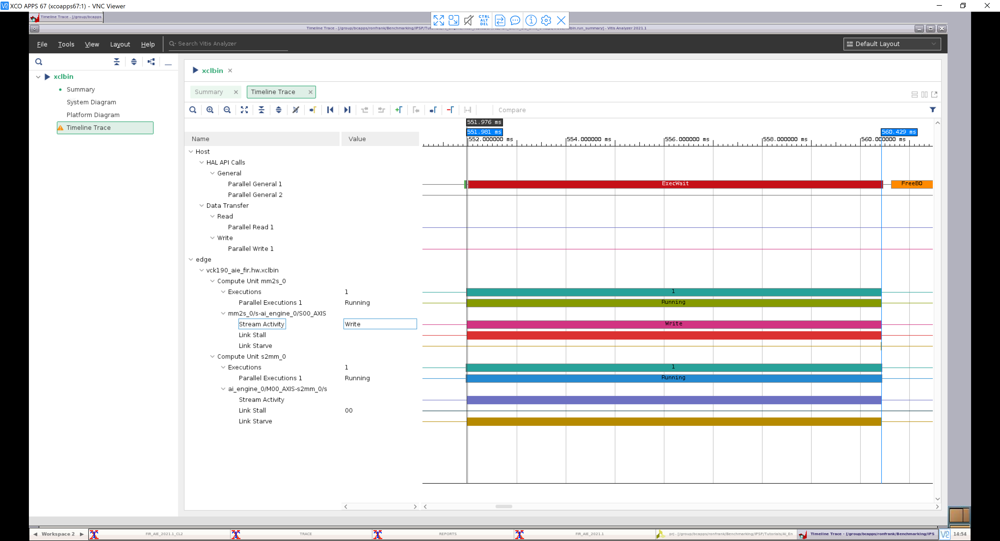

2021.1 Versal AI Engine/HLS FIR Filter Tutorial |
Table of Contents¶
Choosing between AI Engine and HLS Implementations
AI Engine Specific Design Considerations
Introduction¶
The Xilinx® Versal™ adaptive compute acceleration platform (ACAP) is a fully software-programmable, heterogeneous compute platform that combines the processor system (PS) (Scalar Engines that include the Arm® processors), programmable logic (PL) (Adaptable Engines that include the programmable logic blocks and memory) and the Intelligent Engines comprising of both the AI and DSP Engines.
This tutorial is one of several to perform two implementations of a system-level design using AI Engines and HLS with DSP Engines in the Versal device plus PL including LUTs, flip-flops (FFs), and block RAMs. In each implementation, the tutorial takes you through hardware emulation and hardware flow in the context of a complete Versal ACAP system design. A makefile is provided so that you can modify it to suit your needs in a different context.
An important goal and criteria of this tutorial is the use of C++ based kernels for AI Engine and HLS library kernels for DSP Engine and data movers. The use of Vitis™ application acceleration development flow and library kernels is illustrated throughout the tutorial to demonstrate the ease of kernel integration and scalability in a system design. In the Vitis application acceleration development flow, the Vitis HLS tool automates much of the code modifications required to implement and optimize the C/C++ code in PL, including the ease of data mover kernel coding. The inference of required pragmas to produce the right interface for users’ function arguments and to pipeline loops and functions is the foundation of the Vitis HLS in the application acceleration flow. Vitis HLS also supports customization of your code to implement different interface standards or specific optimizations to achieve design objectives, enable scaling, and leverage automation.Note: Alternative design methods to Vitis HLS may increase PL based performance, e.g. using LogiCORE™ FIR Compiler IP and RTL based data movers could increase raw performance but will increase dynamic power and design time.
A frequently asked question is whether using AI Engines,HLS or RTL targeting DSPs produces the better implementation. The answer depends on the design objectives, complexity, and characteristics of every individual design. A section in this tutorial is provided which discusses the trade-offs and provides guidance in helping to determine the best choice for your design.In addition another section discusses AI Engine specific design considerations because AI Engines are a relatively new technology compared to the mature FPGA fabric or PL with DSPs.
Objectives
Objectives¶
After completing the tutorial, you should be able to:
Develop a system level design (FIR filter in this case) by identifying the algorithm and deploying the same algorithm on AI Engine and DSP Engines using Vitis HLS.
Build a complete system design by going through the various steps in the Vitis unified software platform flow, including creating the AI Engine adaptive data flow (ADF) API graph, compiling the A72 host application, and compiling PL kernels, using the Vitis compiler (
v++) to link the AI Engine and HLS kernels with the platform, and packaging the design. You will also be able to run the design through the hardware emulation and hardware flow in a mixed System C/RTL cycle-accurate/QEMU-based simulatorDevelop a consistent harness to have the data mover kernels maintain a similar interface with AI Engine/HLS kernels (with AXI4-stream) and DDR memory (memory-mapped AXI4)
Develop an understanding of graph control APIs to enable run-time updates using the run-time parameter (RTP) interface for the AI Engine implementation and HLS APIs for controlling HLS/PL kernels
Develop an understanding of the various factors that influence the performance, resources, latency, and power of AI Engine and HLS using DSP implementations, so that an informed choice can be made between the two implementations.
Overview
Overview¶
This tutorial implements a FIR filter chain, one implementation targeted at AI Engines and another targeted at DSP Engines using Vitis HLS.
FIR filters provide a large design space to explore. For the purposes of this tutorial, the following parameters are held fixed/constant:
Data Type: cint16
Coefficient type: int16
Symmetric FIR
Fixed (i.e., non-reloadable) coefficients
The number of filter taps in the filters and the number of cascaded filters in the chain can be specified as parameters in the build process. Each filter in the chain consists of an identical number of taps with identical coefficients. While this is not necessarily a realistic design situation, it provides a simple means for generating, scaling and managing the filter chain. One further simplification is the use of a triangular window for the filter coefficients, allowing the taps to be generated simply through linear interpolation. (See https://www.recordingblogs.com/wiki/triangular-window or https://en.wikipedia.org/wiki/Window_function#Triangular_window)
The same filter chain is deployed in the two implementations using AI and DSP Engines. The design will compile through v++, and create a Petalinux-based platform via a script as well as generate the PDI and host application.
The makefile based build process can be directed to build different length chains with a specified number of taps. A similar set of harnesses are developed and maintained between the two implementations to store input/output vectors in DDR memory and use the data mover kernels to move data to and from AI Engine and HLS FIR kernels. In both cases, XRT running A-72 controls data flow in compute and data mover kernels (graph control APIs control AI Engine kernels and HLS APIs control HLS/PL kernels).
Directory Structure
Directory Structure¶
filter_AIEvsHLS
+-- AIE......................contains AI Engine implementation
| +-- build ...................created and contains subfolders from design build
| +-- design ..................contains source and include files
| | +-- aie_src .................AI Engine source code
| | +-- app_src .................A72 application source code
| | +-- pl_src ..................PL (HLS) source code
| +--run_dir...................contains bootable image files to run HW flow
+-- HLS......................contains HLS FIR implementation, targeting DSP Engines
| +-- build ......................created and contains subfolders from design build
| +-- design......................contains source and include files
| | +-- app_src .................A72 application source code
| | +-- pl_src ..................PL (HLS) source code
| +--run_dir...................contains bootable image files to run HW flow
+-- report_dir...............contains the generated resource and power utilization reports for both AI Engine and DSP implementations
Before You Begin¶
Documentation: Explore AI Engine Architecture
Documentation: Explore AI Engine Architecture¶
Tools: Installing the Tools
Tools: Installing the Tools¶
Tools Documentation:
To build and run the FIR filter tutorial (AI Engine and DSP implementations), you will need the following tools downloaded/installed:
Install the Vitis Software Platform 2021.1
Obtain licenses for AI Engine tools
Follow the instructions in Installing Xilinx Runtime and Platforms (XRT)
Download and setup the VCK190 Vitis Platform for 2021.1
Download the DSP Library
Environment: Setting Up the Shell Environment
Environment: Setting Up the Shell Environment¶
When the elements of the Vitis software platform are installed, update the shell environment script. Set the environment variables to your system specific paths.
Edit env_setup.sh script with your file paths:
export XILINX_XRT=<XRT-LOCATION>
export PLATFORM_REPO_PATHS=<YOUR-PLATFORM-DIRECTORY>
export DSPLIB_ROOT=<PATH-TO-DSP-LIBRARY>
source <XILNX-TOOLS-LOCATION>/Vitis/<TOOLS-BUILD>/settings64.sh
source $XILINX_XRT/setup.sh
Then source the environment script:
source env_setup.sh
Validation: Confirming Tool Installation
Validation: Confirming Tool Installation¶
which vitis
which aiecompiler
Confirm that you have the VCK190 production base platform.
platforminfo --list | grep -m 1 -A 9 vck190_base
Output of the previous command should be as follows:
"baseName": "xilinx_vck190_base_202110_1",
"version": "1.0",
"type": "sdsoc",
"dataCenter": "false",
"embedded": "true",
"externalHost": "false",
"serverManaged": "false",
"platformState": "pre_synth",
"usesPR": "false",
Design Implementations¶
The Makefile and source files for the AI Engine and HLS implementations are in the respective directories “AIE” and “HLS”. For the documentation of the flow to build the design and details of the hardware and software design, click on each of the following links:
Choosing between AI Engine and HLS Implementations¶
The choice of which engine (AI or DSP) to use for implementing a specific function in your design or application is not always a simple one. This decision should be taken based on specific requirements of your application with respect to performance requirements and resources. There are some high-level guidelines which can help with architecting your design to a Xilinx Versal device with AI Engines. For example, small functions with modest amounts of computation will most likely be more efficient targeting the PL and DSP Engines. However, as the computational needs start to increase, moving those functions to the AI Engine will provide better efficiency.
It is important not to take that decision in isolation at the function level, but to look at the problem in relation to the complete dataflow path. For instance, an inefficient function implemented in the AI Engine may offer better total efficiency when preceded and followed in the dataflow by large amounts of efficient compute functions. It is likely that it will offer overall better throughput and latency than moving the data to the PL for that specific function and back into the AI Engine array.
For this discussion, computational efficiency is defined as the throughput (Msamples/sec) divided by power (W), and can only be used to compare designs that are identical from a functional standpoint. Given two identical designs with identical throughputs,for the purpose this tutorial, the one using less power is considered the better solution.
Typically, one of the first steps of a design is deciding on an architecture/implementation to meet throughput and latency targets. This architecture/implementation choice generally determines the resources used and power consumed, which may also be required to meet specific targets.
Meeting Throughput Requirements
Meeting Throughput Requirements¶
For DSP based design, the designer begins with an estimate of the system clock rate that the PL is capable of, and divides that by the desired filter throughput to determine how many clock cycles can be used to process a sample. By feeding this number into the FIR Compiler, the FIR is constructed with the minimum resources required to implement the design; the higher the clock cycles per sample, the fewer resources used.
For AI Engine based designs, a FIR kernel running on the AI Engine is executing its code at the AI Engine clock rate (which 1 GHz for the platform used). The maximum throughput of various filter configuration has been benchmarked and can be found on the Vitis DSP Library Benchmark/ QoR page.
For the filter sizes selected in this tutorial, the following AI Engine throughputs were obtained:
| Taps | Throughput |
|---|---|
| 15 | 986.1 MSPS(*) |
| 64 | 266.3 MSPS |
| 129 | 171.4 MSPS |
| 240 | 105.9 MSPS |
(*)Note: This result is I/O bound.
The previous table shows the achieved throughput using one AI Engine per FIR. It is possible within the AI Engine array architecture to cascade partial products between neighboring AI Engine tiles and this can help improve overall throughput for a function at the expense of additional resources being used. This is no different to traditional FPGA design in the PL. See Assigning Multiple AI Engines per Filter.
Resource Utilization
Resource Utilization¶
The AI Engine can reduce the overall requirement on the PL and DSPs in a design with a lot of vectorizable compute. For example, the following shows the required resources for the same 64-Tap FIR filter implemented in both AI Engine and PL with DSPs:
| Impl | Filters | Taps | Param | Throughput | LUTS | Flops | BRAM | DSP | AIE |
|---|---|---|---|---|---|---|---|---|---|
| AIE | 1 | 64 | win=256 | 266.3 MSPS | 213 | 586 | 0 | 0 | 1 |
| HLS | 1 | 64 | ck_per_sam=1 | 299.8 MSPS | 1025 | 4912 | 0 | 64 | 0 |
| AIE | 10 | 64 | win=256 | 266.3 MSPS | 211 | 586 | 0 | 0 | 10 |
| HLS | 10 | 64 | ck_per_sam=1 | 299.8 MSPS | 8787 | 46995 | 0 | 640 | 0 |
| AIE | 1 | 240 | win=256 | 112.6 MSPS | 217 | 586 | 0 | 0 | 1 |
| HLS | 1 | 240 | ck_per_sam=4 | 75.0 MSPS | 1616 | 6243 | 0 | 64 | 0 |
| AIE | 10 | 240 | win=256 | 112.6 MSPS | 213 | 586 | 0 | 0 | 10 |
| HLS | 10 | 240 | ck_per_sam=4 | 74.9 MSPS | 14760 | 60209 | 0 | 640 | 0 |
It is clear that the AI Engine implementation offers significant savings of PL resources, especially as the design size increases.
(*)Note: For the 240 tap FIR filter, the DSP version is processing one sample every four clock cycles. This reduces the throughput, but also proportionately reduces the logic and power. If ck_per_sam were to be set to one, it would provide four times the resources, but it would also utilize four times the resources and power.In any design, targeting any architecture or technology, trade-offs exist and need to be understood to get the most efficient solution for your requirements.
Power Utilization
Power Utilization¶
In general, smaller designs are more power efficient in the PL than in AI Engines, but the advantage switches over to AI Engines as the design becomes larger.
This can be seen in the following dynamic power graph for 240-tap FIR chains with 1, 5, and 10 FIR filters connected sequentially. In the case of the HLS or DSP implementation, the power slope is a straight line which would go through the origin. For the AI Engine implementation, a single filter starts off with a much higher dynamic power, but the slope is shallower, so in a 5 filter chain, the power is similar the HLS implementation, and the advantage starts to move towards the AI Engine implementations, and then at ten FIR filters in the chain, the power of the AI Engine implementation is using ~1 Watt less than that of the HLS and DSP based FIR filter chain.
(*)Note: DSP Refers to the HLS Implementation.
Computational Efficiency
Computational Efficiency¶
Computational efficiency is a very common and important metric for comparing two designs. It is calculated by dividing the throughput by the power consumed (MegaSamples/Watt). For a given design, the one with a higher number is more efficient in its use of power to perform the computations. In the following graph computational efficiency is plotted for a 240-tap FIR filter chain with 1, 5, and 10 filters. For this graph the slope is not relevant, but whether for a given chain, the efficiency of a design is better or worse than the other implementation. Here we can see that the computation efficiency is better for a one DSP implementation of a single FIR filter , but the AI Engine implementation efficiency is better as the number of filters in a chain increases.
(*)Note: DSP Refers to the HLS Implementation.
AI Engine Specific Design Considerations¶
Assigning Multiple AI Engines per Filter
Assigning Multiple AI Engines per Filter¶
For a HLS implementation, specifying the number of clocks per sample establishes the throughput and is the primary factor in determining how many resources are required, and the relationship is quite linear.
For the AI Engine DSPLib FIR filter kernels, the kernels provide a parameter called cascade length (CASC_LEN), which can be used to assign multiple AI Engines to a particular filter kernel. This results in increased throughput, but the relationship is not linear. The following graphs show the results for a single 129 tap FIR filter, with CASC_LENs of 1,2, and 4.
As can be seen, going from CASC_LEN =1 to CASC_LEN=2 produces a significant improvement in performance. Going from CASC_LEN=2 to CASC_LEN=4 increases performance even further, but offers diminishing returns. Given that power increases with increasing AI Engines, the resulting computation efficiency chart shows that adding more AI Engines can potentially decrease computational efficiency as seem in this case.
However, some application may need every bit of throughput performance available and are not power constrained, others may see the two cascade option as optimal as it gives the best performance while maintaining the design within the power constraints. All decisions should be made with the complete application and its requirements in mind.
The following table provides some additional information on data on throughput for various filter sizes implemented on the AI Engines using different cascade lengths:
| Taps | Throughput (CASC_LEN=1) | Throughput (CASC_LEN=2) | Throughput (CASC_LEN=4) |
|---|---|---|---|
| 15 | 986.1 MSPS(*) | Too small to cascade | Too small to cascade |
| 64 | 266.3 MSPS | 352.6 MSPS | 450.0 MSPS |
| 129 | 171.4 MSPS | 254.8 MSPS | 324.1 MSPS |
| 240 | 105.9 MSPS | 179.8 MSPS | 234.4 MSPS |
(*)Note: this result is I/O bound.
Window Size
Window Size¶
The AI Engine processes data in bursts and these data bursts are transferred between AI Engines utilizing ping-pong buffers. The data from one engine is written into one of the two buffers and when it is filled, the buffers are swapped and the data read out by the downstream engine. The size of these data bursts is referred to as the window size, and establishing the optimum window size is a balancing act between throughput and latency. Larger window sizes provide higher throughput because there the burst overhead is less of an influence on the performance. However, latency increases proportionately to the window size.
Thus, the window size should be chosen to be just large enough such that the desired throughput target is met.
The following is data for the AI Engine with one 64-tap FIR filter example for various window sizes:
| Impl | Filters | Taps | Window Size | Throughput | Latency |
|---|---|---|---|---|---|
| AIE | 1 | 64 | 64 | 200.0 MSPS | 0.453 us |
| AIE | 1 | 64 | 256 | 266.3 MSPS | 1.287 us |
| AIE | 1 | 64 | 1024 | 297.8 MSPS | 4.533 us |
If, for example, our throughput requirements were 250 MSPS, a window size of 256 would satisfy that performance requirement with the least amount of latency.
Measuring Resources, Throughput, Latency, and Power¶
Measuring Resources, Throughput, Latency, and Power
Resource Utilization¶
The resource utilization information can be found in the report_dir directory, with the file name: fir_[aie|dsp]<number_of_fir_filters>firs<number_of_filter_taps>taps_utilization.txt
Or, if you wish to extract this information from the design yourself, open the project in Vivado tools:
build/fir_aie_$(N_FIR_FILTERS)firs_$(N_FIR_TAPS)taps/[hw|hw_emu]/_x/link/vivado/vpl/prj/prj.xpr
Then open the implemented design and select Report Utilization.
Throughput and Latency Measurements
Throughput and Latency Measurements¶
To maintain consistency between the AI Engine and DSP implementation, the same flow to measure throughput is used to run the design in hardware and capture trace data in run time. Refer to the Vitis Unified Software Development Platform documentation for more information. To setup the flow to measure throughput, refer to the section “Run on Hardware” in the AI Engine and HLS implementation documentation, and run the application.
After the application has been run, three files will be created:
device_trace_0.csv
hal_host_trace.csv
xclbin.run_summary Transfer the .csv and _summary files back to the run_dir directory, for example:
Scp -r *.csv *_summary <user>@10.10.71.101:<path>
Then run vitis_analyzer, open the xclbin.run_summary_file, and select Timeline Trace:
A trace of the AI Engine implementation with N_FIR_FILTERS=5 and N_FIR_TAPS=64 is shown in the following figure: 
To measure throughput, the cursors are lined up with the start and end of the read (S2MM) stream (cursor times with ns resolution can be obtained by zooming in further):
Data Transfer Interval = 560,429.557 - 551,981.333 = 8,448.224 us
Throughput = Samples /(Data Transfer Interval)
= (512 x 4096 bytes) / 8448.224 us
= 248.2 Msamples / sec
To measure latency, the measurement is made from the start of the write (MM2S) stream to the start of the read (S2MM) stream:
Latency = 551,981.333 - 551,976.147 = 5.186 us
Power Utilization
Power Utilization¶
The power utilization information can be found in the report_dir directory, with the file name: fir_[aie|dsp]<number_of_fir_filters>firs<number_of_filter_taps>taps_power.txt
Or, if you wish to extract this information from the design yourself, open the project in Vivado:
build/fir_aie_$(N_FIR_FILTERS)firs_$(N_FIR_TAPS)taps/[hw|hw_emu]/_x/link/vivado/vpl/prj/prj.xpr
Then open the implemented design and select Report Power.
Conclusion¶
In this tutorial, we have demonstrated how to implement FIR filter chains in both the AI Engine and PL with(DSPs) using HLS using the Vitis kernel based flow.
Also, we explored the AI Engine implementation and how design decisions can affect the overall performance for a FIR filter chain with respect to throughput, resources and performance. Part of this exercise was to show that small FIRs taken in isolation may not be that efficient an implementation when targeting AI Engine but as the FIRs increase in size and the number of instances increase, it becomes apparent that AI Engine becomes the most efficient solution. It can also be seen from the results, how even more compute, beyond this example, and a larger data path will enable greater efficiency of implementation and performance than the traditional FPGA programmable logic and DSP engines, if that is what your application needs.
Revision History¶
Jul 2021 - Initial Release
Support¶
GitHub issues will be used for tracking requests and bugs. For questions go to forums.xilinx.com.
License¶
Licensed under the Apache License, Version 2.0 (the “License”); you may not use this file except in compliance with the License.
You may obtain a copy of the License at http://www.apache.org/licenses/LICENSE-2.0
Unless required by applicable law or agreed to in writing, software distributed under the License is distributed on an “AS IS” BASIS, WITHOUT WARRANTIES OR CONDITIONS OF ANY KIND, either express or implied. See the License for the specific language governing permissions and limitations under the License.
XD061 | © Copyright 2021 Xilinx, Inc.